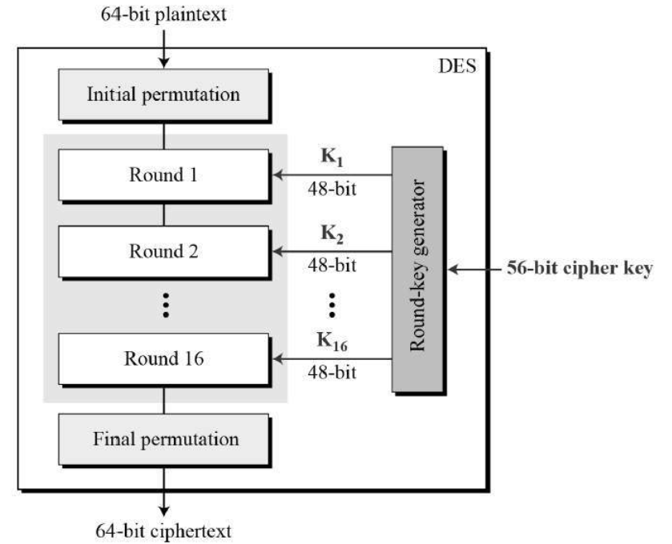

The Data Encryption Standard (DES) is a symmetric-key block cipher published by the National Institute of Standards and Technology (NIST).
DES is an implementation of a Feistel Cipher. It uses 16 round Feistel structure. The block size is 64-bit. Though, key length is 64-bit, DES has an effective key length of 56 bits, since 8 of the 64 bits of the key are not used by the encryption algorithm (function as check bits only). General Structure of DES is depicted in the following illustration −
DES
